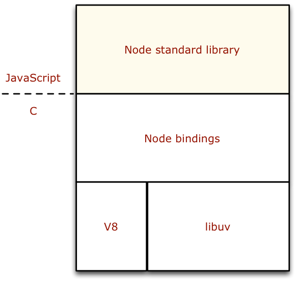

HS Augsburg Einführung
09.10.2013
Web-Entwicklung mit Node.js
Mittwochs 14.00 - 17.10 Uhr
im Raum W3.01
Michael Jaser / Johannes Ewald
peerigon UG
Über uns
Michael Jaser
- Wirtschaftsinformatik B.Sc.
Johannes Ewald
- Interaktive Medien B.A.
>> roomieplanet
>> peerigon UG

- Plattform zur WG-Verwaltung
- Projektarbeit (2 Semester)
- siebenköpfiges Team (WI/IAM)
- kostenlos!
- roomieplanet.com

Unsere Idee
"Peerigon hilft dir und deinen Freunden, Freizeitprojekte gemeinsam auf die Beine zu stellen."
- Web- & Mobile-App
- HTML5 / CSS3
- Backend mit Node.js
- Datenschutz!
- Werbefreiheit!
Mehr dazu auf peerigon.com
Förderungen für Existenzgründer
- Exist Stipendium
- Flügge Stipendium
Organisatorisches
- Theorie gepaart mit vielen Übungen
- 3 Einzel-Aufgaben
- 1 Projektarbeit im Team
- Abgaben via GitHub (git)
Agenda
- Einführung
- Javascript WTF
- Node.js Basics
- Web-Hacking
- Datenbanken
- Error-Handling / Flow-Control
- Best-Practice
- Test-Driven-Development
Aufgaben
- 3 aufeinander aufbauende Teilaufgaben
- Bearbeitungszeitraum je 1 Woche
- während der Vorlesungszeit lösbar
- verpflichtend, aber nicht benotet
Projekt
- ~8 Wochen Zeit
- freie Themenwahl
- parallel zur Vorlesung
- 2 - 5er Teams

var http = require('http');
http.createServer(function (req, res) {
res.writeHead(200, {'Content-Type': 'text/plain'});
res.end('Hello World\n');
}).listen(1337, "127.0.0.1");
console.log('Server running at http://127.0.0.1:1337/');Node's goal is to provide an easy way to build scalable network programs (http://nodejs.org)
- wurde 2009 veröffentlicht von Ryan Dahl
- wird seit Januar 2012 betreut von Isaac Schlueter
- basiert auf der V8-Engine von Google (Chrome)
- ist Open-Source unter der MIT Lizenz
- ist geschrieben in C++ und JavaScript
Architektur
V8
JavaScript-Engine als Grundlage (Chrome)
Node Standard Library
bietet wichtige Funktionen die JavaScript nicht mit bringt. z.B. Dateisystem-Zugriff, Server-Komponenten (HTTP/UDP) aber auch allgemeine Utilities (EventEmitter)
teilweise implementiert in C(++) auf Basis von libuv um mit dem Betriebssystem zu kommunizieren.
Versionen & Bedeutung
- aktuell ist 0.10.x
- gerade Versionsnummer = stable Release
- ungerade Versionsnummer = unstable Release
Hello World
- node startet die REPL (Read-Eval-Print-Loop)
- node app.js führt die Datei aus
- Server laufen nur solange der Prozess läuft
var http = require('http');
http.createServer(function (req, res) {
res.writeHead(200, {'Content-Type': 'text/plain'});
res.end('Hello World\n');
}).listen(1337, "127.0.0.1");
console.log('Server running at http://127.0.0.1:1337/');Module
- Core-Module (fs, http, process, etc.)
- Userland-Module (NPM)
npm install <module>- mehr zu NPM später...
Node.js?
eine kleine BegriffsklärungAsnychronous / Non-Blocking
// PHP
print("Hello");
sleep(5);
print("World");
print("Bye");
// NODE
console.log("Hello");
setTimeout(function() {
console.log("World");
}, 5000);
console.log("Bye");Synchron
var fs = require("fs"),
names;
var namesJSON = fs.readFileSync("./names.json");
names = JSON.parse(namesJSON);Asynchron
var fs = require("fs"),
names;
fs.readFile("./names.json", function(err, namesJSON) {
names = JSON.parse(namesJSON);
});Event-Orientiert
var http = require('http');
var server = http.createServer().listen(1337);
server.on("request", function(req, res) {
console.log("request received: ", req.url);
res.writeHead(200, {'Content-Type': 'text/plain'});
res.end('Hello World\n');
});Für was verwendet man Node.js?
Echtzeit-Anwendungen
- Websockets (socket.io)
- Streams
- stehende Verbindungen
- http://todomvc.peerigon.com
REST-APIs
- gute Performance bei hoher Request-Rate (IO)
- JavaScript & JSON = best friends
Single Page Application
- schnelles Backend dank Node
- Code-Sharing zwischen Browser & Client (z.B. Validierung)
systemnahe Anwendungen
+ gute Betriebssystem-Integration
+ Streams!
- Automatisierung (Skripts)
- Command-Line-Tools
Euer Setup
- Node läuft auf eurem Rechner
- Git ist auf eurem Rechner installiert
- Ihr habt einen GitHub-Account (optional)
- Ihr habt eine passende IDE (Webstorm)
Node.js Setup
Installation
- http://nodejs.org/download/
- Binaries für Win/OSX
- Linux via Paketmanager oder kompilieren
- Test mit node -v
git-Setup
Was ist git?

Git ([ɡɪt], engl. Blödmann) ist eine freie Software zur verteilten Versionsverwaltung von Dateien, die ursprünglich für die Quellcode-Verwaltung des Linux-Kernels entwickelt wurde. (http://de.wikipedia.org/wiki/Git)
Mehr Infos gibts unter http://git-scm.com/
Warum git?
- weit verbreitet (siehe GitHub)
- flexibel
- dezentral
- de-facto Standard in der Node-Community
Installation
GitHub-Setup
GitHub-Account
- https://github.com
- kostenlos umbegrenzt offene Repositories
- für Studenten auch private Repositories kostenlos
- https://github.com/edu
- Anleitung EDU-Account beantragen
SSH-keys
https://help.github.com/articles/generating-ssh-keysGit-Basics
Repository erstellen
mkdir ~/Hello-World
cd ~/Hello-World
git init
# Sets up the necessary Git files
# Initialized empty Git repository in /Users/you/Hello-World/.git/Commit
touch README
# Creates a file called "README" in your Hello-World directory
git add README
# Stages your README file, adding it to the list of files to be committed
git commit -m 'first commit'
# Commits your files, adding the message "first commit"Push/Pull
git remote add origin https://github.com/username/Hello-World.git
# Creates a remote named "origin" pointing at your GitHub repository
git push origin master
# Sends your commits in the "master" branch to GitHub
git pull origin master
# Loads latest version from master (like svn: update)IDE
- wir empfehlen Webstorm http://www.jetbrains.com/webstorm/
- Web & Node.js IDE von IntelliJ
- 30-tägige Test-Version
- Lizenzen über die Hochschule
Eure Aufgaben
Dieses Setup und eure Aufgaben findet ihr in Zukunft als Issues unter:
https://github.com/hsa-nodejs-workshop/aufgaben-ws-13-14/issues